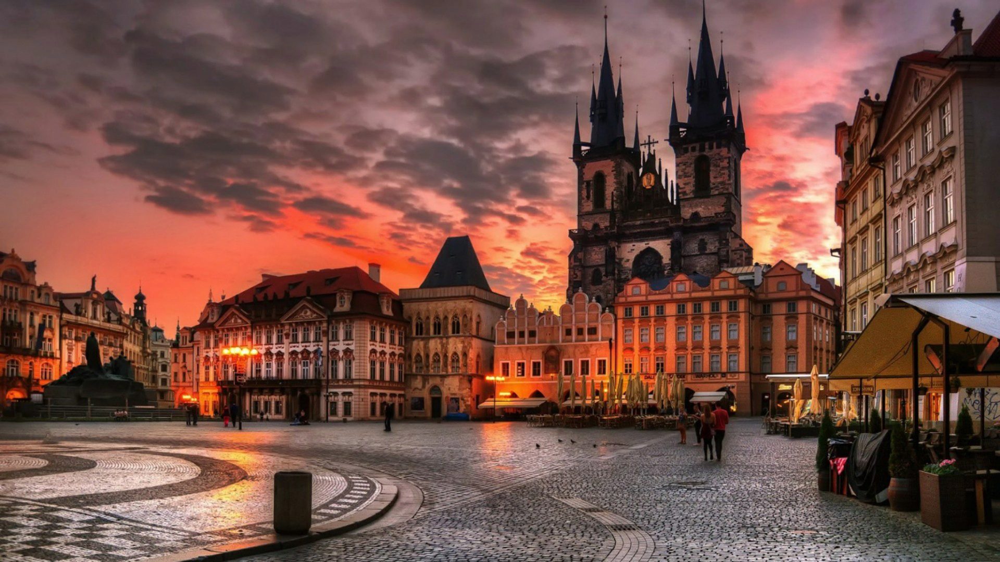

Prague
Prague is the capital and largest city in the Czech Republic, the 13th largest city in the European Union and the historical capital of Bohemia. Situated on the Vltava river, Prague is home to about 1.3 million people, while its metropolitan area is estimated to have a population of 2.7 million. The city has a temperate oceanic climate, with relatively warm summers and chilly winters.
Charles Bridge

Is a medieval stone arch bridge that crosses the Vltava (Moldau) river in Prague, Czech Republic. Its construction started in 1357 under the auspices of King Charles IV, and finished in the early 15th century. The bridge replaced the old Judith Bridge built 1158–1172 that had been badly damaged by a flood in 1342. This new bridge was originally called Stone Bridge or Prague Bridge, but has been referred to as "Charles Bridge" since 1870.
As the only means of crossing the river Vltava until 1841, Charles Bridge was the most important connection between Prague Castle and the city's Old Town and adjacent areas. This land connection made Prague important as a trade route between Eastern and Western Europe.
A UNESCO World Heritage site, the bridge is 516 metres long and nearly 10 metres wide. Following the example of the Stone Bridge in Regensburg, it was built as a bow bridge with 16 arches shielded by ice guards.[2] It is protected by three bridge towers, two on the Lesser Quarter side (including the Malá Strana Bridge Tower) and one on the Old Town side, the Old Town Bridge Tower. The bridge is decorated by a continuous alley of 30 statues and statuaries, most of them baroque-style, originally erected around 1700, but now all have been replaced by replicas.
Wenceslas Square

Wenceslas Square is one of the main city squares and the centre of the business and cultural communities in the New Town of Prague, Czech Republic. Many historical events occurred there, and it is a traditional setting for demonstrations, celebrations, and other public gatherings. It is also the place with the busiest pedestrian traffic in the whole country. The square is named after Saint Wenceslas, the patron saint of Bohemia. It is part of the historic centre of Prague, a World Heritage Site.
Old Town Square
Old Town Square is a historic square in the Old Town quarter of Prague, the capital of the Czech Republic. It is located between Wenceslas Square and Charles Bridge.